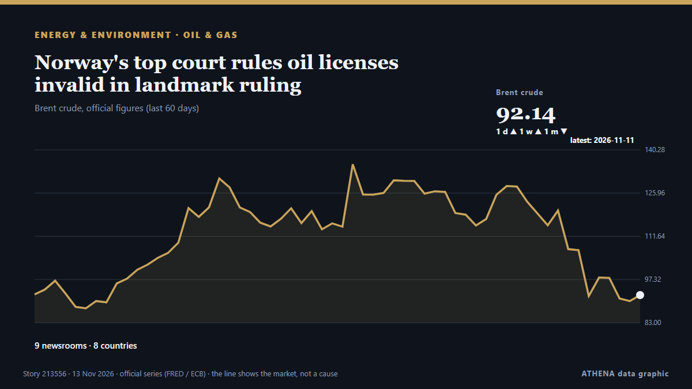

Πετρέλαιο & φυσικό αέριο
ΧορηγούμενοΠαρουσιάζεται από  Cybernetics and Artificial Intelligence Lab Welcome to the Cybernetics and Artificial Intelligence Laboratory, established at the Department of Business Administration of the National and Kapodistrian University of Athens. The lab is headed by Professor Dimitrios Thomakos. The lab aims to do research that can be published in top venues. Our research uses tools and methods of Artificial Intelligence, and lies in the following areas: - Forecasting - Decision making - Cyber security - Finance We are always looking forward to collaborating with exceptional students!
Cybernetics and Artificial Intelligence Lab Welcome to the Cybernetics and Artificial Intelligence Laboratory, established at the Department of Business Administration of the National and Kapodistrian University of Athens. The lab is headed by Professor Dimitrios Thomakos. The lab aims to do research that can be published in top venues. Our research uses tools and methods of Artificial Intelligence, and lies in the following areas: - Forecasting - Decision making - Cyber security - Finance We are always looking forward to collaborating with exceptional students!
| 1 Νοε | 0 |
|---|---|
| 2 Νοε | 0 |
| 3 Νοε | 0 |
| 4 Νοε | 1 |
| 5 Νοε | 0 |
| 6 Νοε | 0 |
| 7 Νοε | 0 |
| 8 Νοε | 0 |
| 9 Νοε | 4 |
| 10 Νοε | 6 |
| 11 Νοε | 4 |
| 12 Νοε | 7 |
| 13 Νοε | 1 |
| 14 Νοε | 0 |
Οι τίτλοι των ειδήσεων παρουσιάζονται στα αγγλικά, όπως δημοσιεύτηκαν.

Norway's top court rules oil licenses invalid in landmark ruling
The country's Supreme Court ruled that three oil licenses granted by the government in the North Sea were invalid since their emissions impact had not adequately been accounted for. από Le Monde (English)
Oil prices set for second weekly decline as Trump to stay with Iran blockade
Houthis say they attacked East-West pipeline in Saudi Arabia, Saudi Aramco building. από The Business Times
CNOOC Makes Ultra-Deep Gas Discovery in China's Bohai Sea
China's CNOOC has discovered a high-yield oil and gas well in ultra-deep volcanic formations in the Bohai Sea, with testing showing natural gas flow of approximately 800… από Offshore Engineer
Oil Rises as Trump Dims Iran Deal Hopes
Oil prices rose more than 3% as Trump's comments dampened hopes for a diplomatic breakthrough with Iran. από Rigzone
Crude prices fall from six-month highs; WTI stands at $101 per barrel, Brent costs $115
Oil prices experienced a decline of over 1% after hitting six-month peaks, primarily due to geopolitical unrest in Saudi Arabia. από Times of India
US handled $12 billion of Venezuela’s oil revenues, report says
The United States handled more than $12 billion of Venezuela’s oil revenues in the first nine months of this year, according to a report made public by the State Department on Thursday, in an… από Cyprus Mail
‘Now or never’ – Argentina targets UK, Malvinas oil project at tribunal
Delegation representing the government makes its case at the International Tribunal for the Law of the Sea, calling for provisional measures to halt new drilling and the installation of production… από Buenos Aires Times
MPA opens applications for LNG floating storage unit licences
The Maritime and Port Authority of Singapore has opened applications for licences to operate up to two LNG Floating Storage Units in Singapore anchorages. από Container News
Oil Prices Squeezed Between Peace Hopes and Iran Escalation Risk
Oil prices have crashed about 20% from the late-October peak of $118 per barrel, weighed down by hopes of sustainable de-escalation in the Middle East and the Russia-Ukraine war. από OilPrice.com
Yemen’s Houthis say they attacked pumping station on Saudi Arabia’s East-West oil pipeline
Yemen’s Iran-aligned Houthis said on Thursday they had attacked a pumping station on the Saudi East-West oil pipeline, an oil facility in the Saudi Red Sea city of Yanbu, and an Aramco building in… από Cyprus Mail
Orlen terminates QatarEnergy LNG supply contract
Poland’s Orlen said it had exercised its right to terminate one of the two long-term LNG supply contracts with a unit state-owned LNG giant QatarEnergy due to an ongoing force majeure resulting in an… από LNG Prime
Naftogaz Gets Dutch Grant to Secure Winter Gas
Ukraine's state-owned Naftogaz secured an agreement for a Dutch government grant of over $25 million through the EBRD to help secure natural gas supply, as Ukraine and Russia continue to exchange… από Rigzone
EU purchases of Russian Yamal LNG rise to over $9 billion in 2026, despite October dip
The European bloc has already paid over one-fifth more for Yamal LNG this year than throughout the entire 2025, according to Urgewald. από Kyiv Independent
Gas prices fall below $4 per gallon for the first time since July
The national average for the cost of gas dropped to less than $4 per gallon on Tuesday for the first time since July, as prices soared in the months following the start of the Iran war. από The Hill
Planet One opens new exploration frontier with offshore Ghana hydrocarbon discovery
Planet One Oil & Gas has announced the discovery of hydrocarbons at its Nya Gyidie-1X exploration well in the Deepwater Cape Three Points (DWCTP) Block offshore Ghana. από MyJoyOnline
Mideast crisis fuels crude conflict in Myanmar
As fuel shortages in Myanmar continue to bite, the junta and resistance forces scrabble to secure Magway’s “Anyar Dubai” oilfields. από Myanmar Now
ExxonMobil Takes First Step Toward Venezuela Oil Return
ExxonMobil said on Monday it signed a memorandum of understanding with Venezuelan state oil company PDVSA to assess upstream oil opportunities, marking a potential return to the country nearly two… από MarineLink
Ukrainian strikes cut Russia's oil refining capacity by 30%, Reuters reports
Over the past week, Ukrainian attacks disrupted operations or caused emergency situations at nine of Russia's 35 major refineries, according to Reuters. από Kyiv Independent
Oil Price Falls Below $90 First Time in 4 Months as Trump Signals Iran De-escalation
• Development portends mixed fortunes for Nigeria Emmanuel Addeh in Abuja Nigeria’s crude benchmark, Brent, fell below the $90 per barrel threshold yesterday for the first time since August, as. από ThisDay (Nigeria)